Notice
NIGHT의 컴백, 콘텐츠 공개, 팬클럽 및 공식 사이트 업데이트 소식을 안내합니다.
ANNIVERSARYNIGHT 5TH ANNIVERSARY POP-UP 공개
RELEASESENSATIONAL 발매 및 범(虎) 공개
RELEASEINFINITY 발매 및 RESTART 공개
MEMBER EVENTNIGHT BIRTHDAY CAFÉ ARCHIVE 공개
SEPTEMBER SCORE, TAKE 1129, HALF TIME 0118, MOVE 0407, NOCTURNE 0621까지 다섯 멤버의 생일카페 기록을 공개합니다.
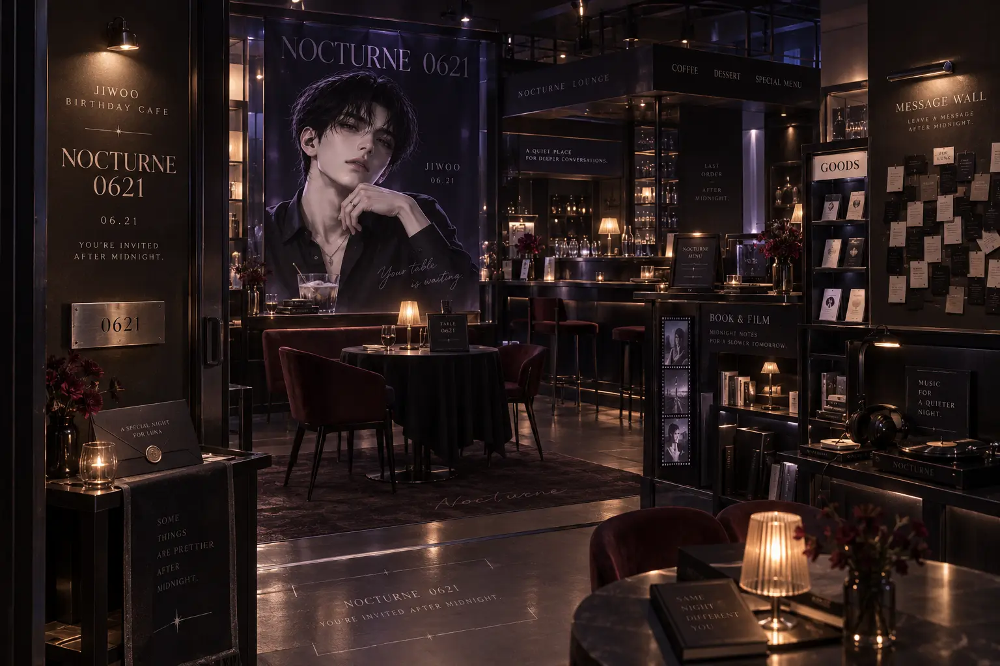
VIEW FIVE STORIES →CONTENTSNIGHT 관찰 예능 공식 스틸 공개
RELEASECOMPLETE 발매 및 NOT FINISH 공개
CONCERTNIGHT 3RD CONCERT 夢夜 아카이브 공개
EVENT2026 YEAR-END AWARDS 현장 공개
RELEASEAFTER HOURS 발매 및 NO SUNRISE 공개
NIGHT의 WINTER SPECIAL ALBUM AFTER HOURS와 타이틀곡 NO SUNRISE가 공개되었습니다. 아침이 오지 않는 새벽의 도시를 담은 전체 아카이브를 확인하세요.
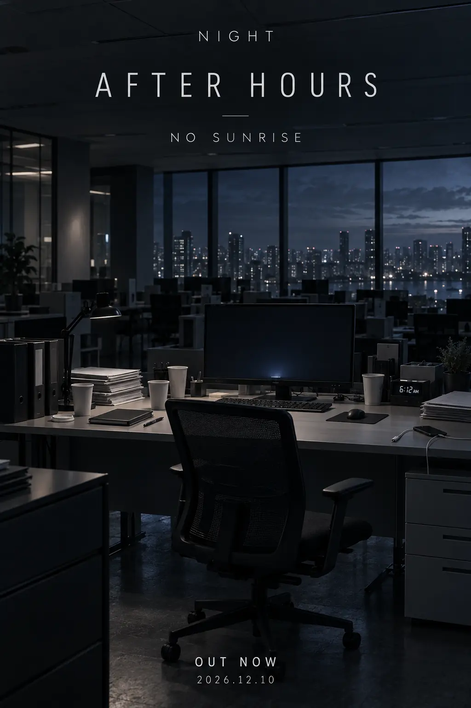
ENTER AFTER HOURS →COMEBACKNO SUNRISE D-1 POSTER 공개
WINTER SPECIAL ALBUM AFTER HOURS 발매를 하루 앞둔 NO SUNRISE D-1 포스터가 공개되었습니다.
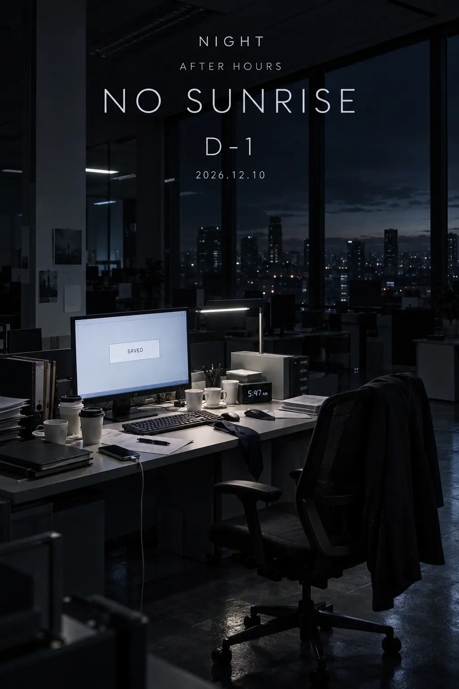
COMEBACKNO SUNRISE M/V TEASER 공개
AFTER HOURS 타이틀곡 NO SUNRISE의 M/V 티저가 공개되었습니다.
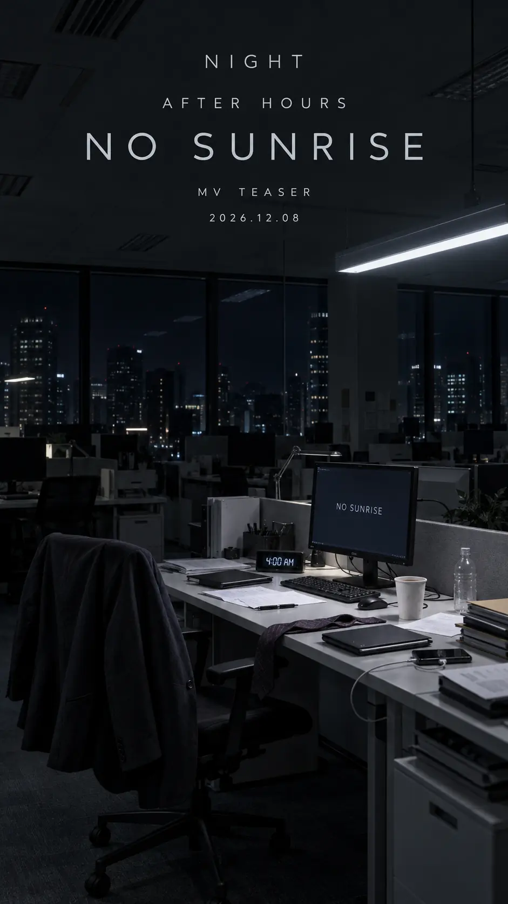
COMEBACKAFTER HOURS HIGHLIGHT MEDLEY 공개
AFTER HOURS의 네 트랙을 미리 만나는 하이라이트 메들리가 공개되었습니다.
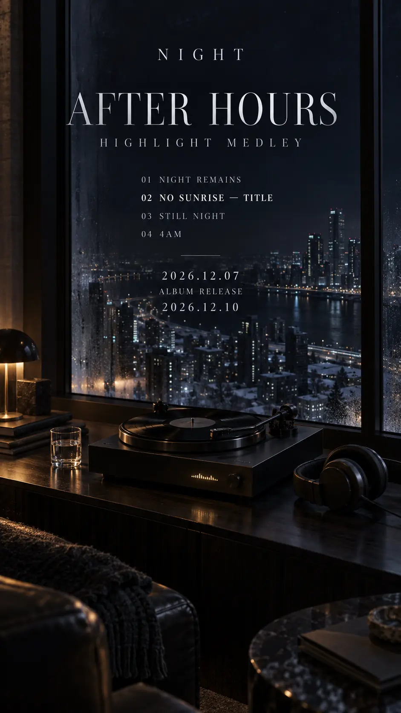
COMEBACKAFTER HOURS TRACKLIST 공개
NIGHT REMAINS, 타이틀곡 NO SUNRISE, STILL NIGHT, 4AM까지 AFTER HOURS의 네 트랙이 공개되었습니다.
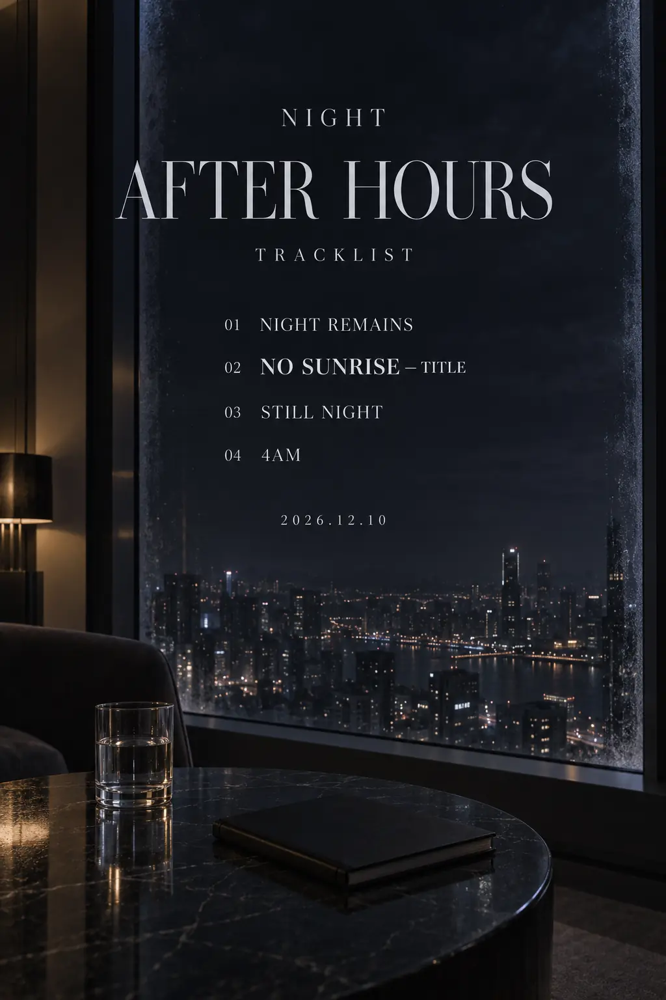
COMEBACKAFTER HOURS CONCEPT PHOTO 공개
새벽의 고층 공간과 차가운 푸른 도시를 배경으로 한 NIGHT의 AFTER HOURS 단체 및 개인 콘셉트 포토가 공개되었습니다.
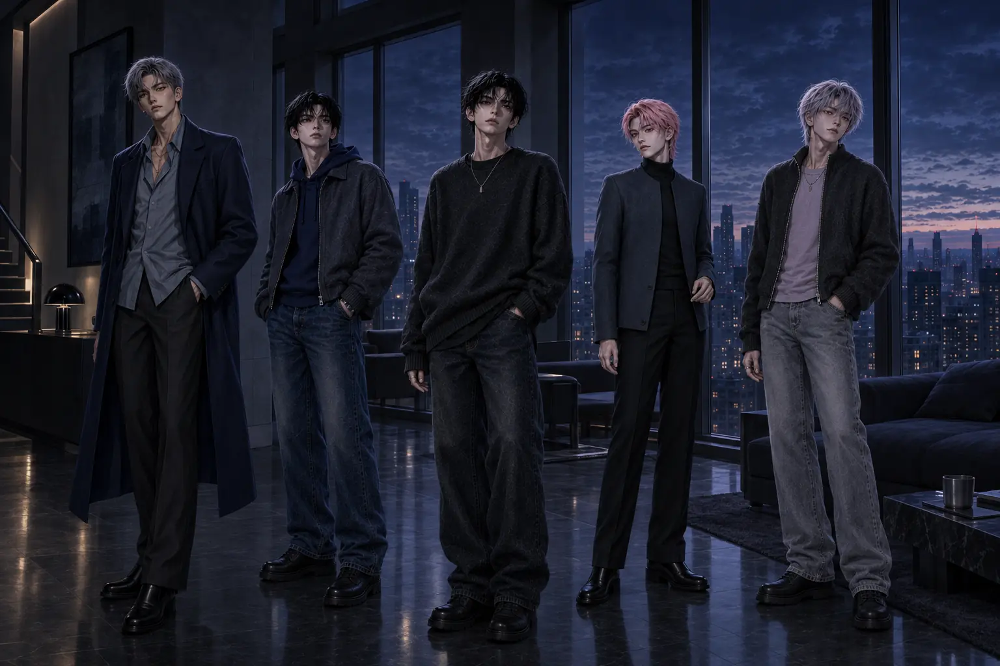
VIEW CONCEPT PHOTOS →COMEBACKAFTER HOURS COMEBACK SCHEDULER 공개
NIGHT의 WINTER SPECIAL ALBUM AFTER HOURS 컴백 스케줄러가 공개되었습니다. 앨범과 타이틀곡 NO SUNRISE는 2026.12.10 공개됩니다.
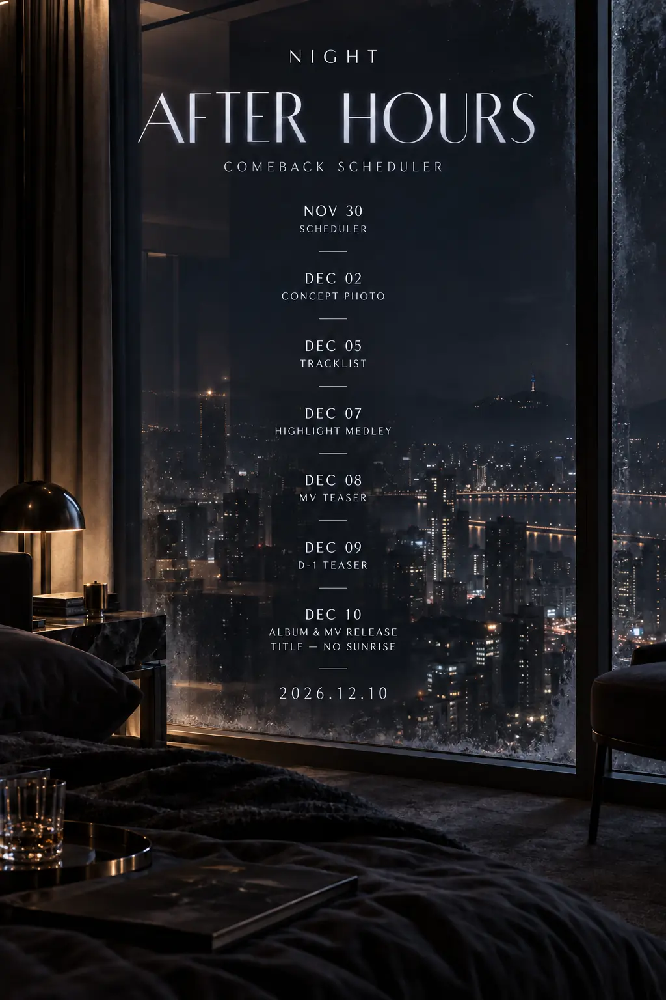
SPECIAL STAGE PHANTOM SPECIAL STAGE — A/B MIX VER. 공개
NIGHT의 4th Mini Album PHANTOM 타이틀곡 ILLUSION SPECIAL STAGE A/B MIX VER. 무대가 공개되었습니다. A와 B 두 버전의 실루엣과 디테일을 하나의 무대로 연결하며 PHANTOM 공식 프로모션 일정을 마무리합니다.
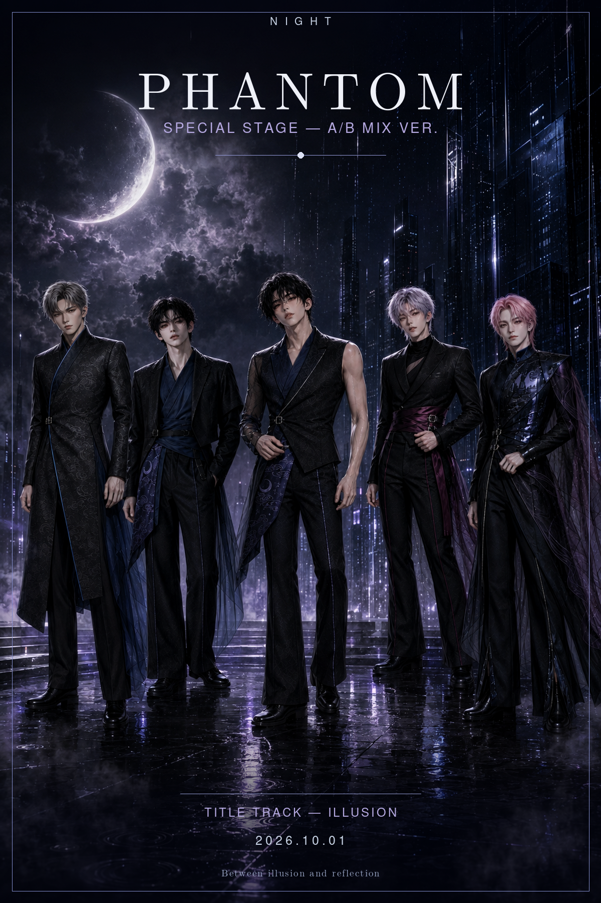
MUSIC SHOW PHANTOM MUSIC SHOW STAGE — B VER. 공개
NIGHT의 4th Mini Album PHANTOM 타이틀곡 ILLUSION MUSIC SHOW STAGE B VER. 무대가 공개되었습니다. 더 짙어진 블랙 실루엣과 차가운 도시의 빛으로 PHANTOM의 두 번째 음악방송 버전을 선보입니다.
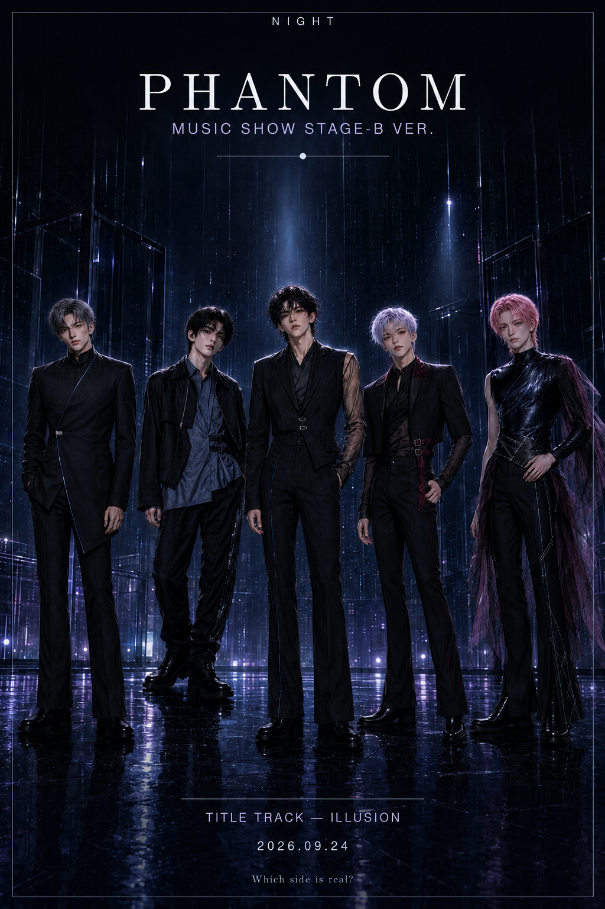
EVENT PHANTOM 발매 기념 팬사인회 현장 공개
NIGHT의 4th Mini Album PHANTOM 발매 기념 팬사인회 현장이 공개되었습니다. NIGHT와 LUNA가 함께한 열여섯 장면을 공식 아카이브에서 확인하세요.
VIEW FANSIGN ARCHIVE →MUSIC SHOW PHANTOM COMEBACK STAGE — A VER. 공개
NIGHT의 4th Mini Album PHANTOM 타이틀곡 ILLUSION 컴백 스테이지 A VER. 무대가 공개되었습니다. 초승달과 검은 수면을 배경으로 PHANTOM의 첫 음악방송 무대를 선보입니다.
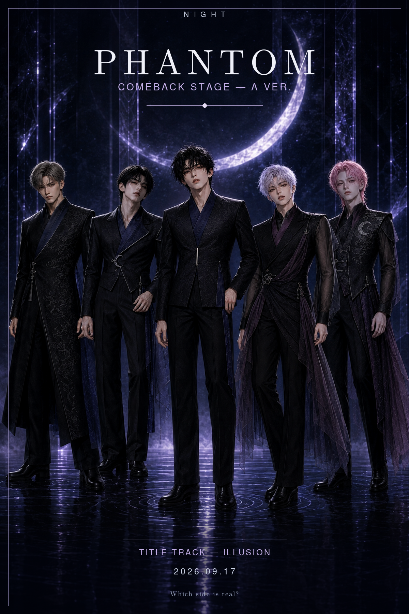
RELEASE PHANTOM 발매 및 ILLUSION Official M/V 공개
NIGHT의 4th Mini Album PHANTOM과 타이틀곡 ILLUSION Official M/V가 공개되었습니다. 현실과 환상의 경계를 가르는 PHANTOM의 새로운 밤을 지금 만나보세요.
 LISTEN TO ILLUSION →
LISTEN TO ILLUSION →
COMEBACK ILLUSION M/V TEASER 02 공개
NIGHT의 4th Mini Album PHANTOM 타이틀곡 ILLUSION의 두 번째 M/V 티저가 공개되었습니다. 비에 젖은 도시 위 다섯 멤버와 수면 속 반전된 잔상이 서로를 마주하며, 환상이 되돌아보는 순간을 담았습니다.
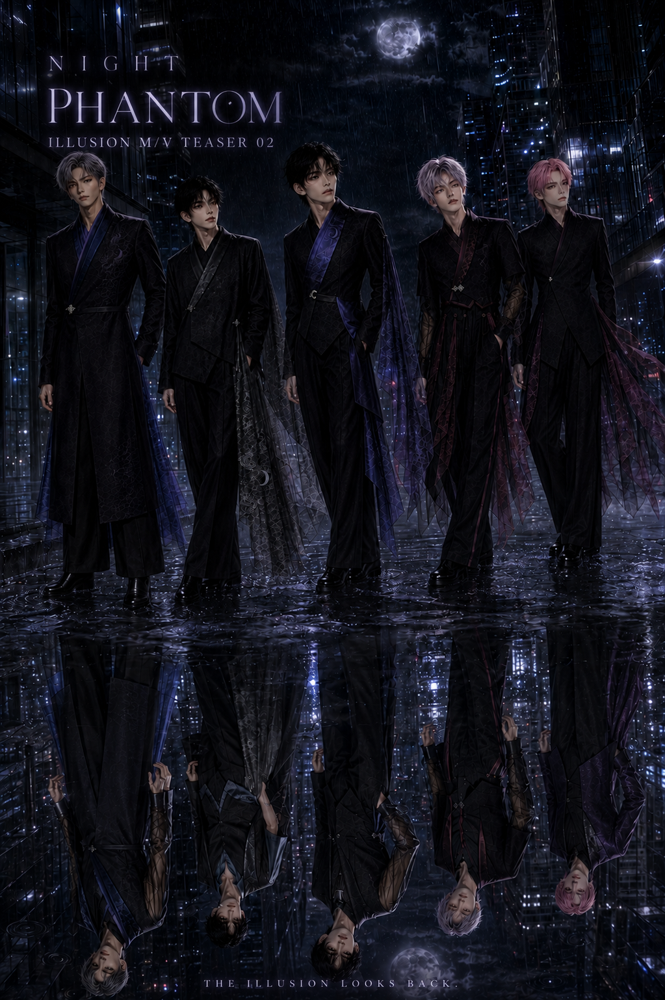
COMEBACK ILLUSION M/V TEASER 01 공개
NIGHT의 4th Mini Album PHANTOM 타이틀곡 ILLUSION의 첫 번째 M/V 티저가 공개되었습니다. 비에 잠긴 도시와 갈라지는 달빛 속에서 현실과 환상의 경계가 더욱 흐려집니다.
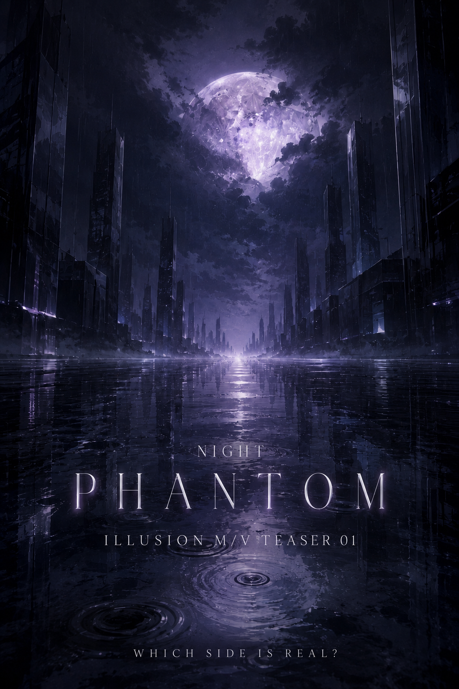
COMEBACK PHANTOM HIGHLIGHT MEDLEY 공개
NIGHT의 4th Mini Album PHANTOM 전곡 하이라이트 메들리가 공개되었습니다. 전체 메들리와 여섯 트랙의 개별 프리뷰를 전용 페이지에서 확인하세요.
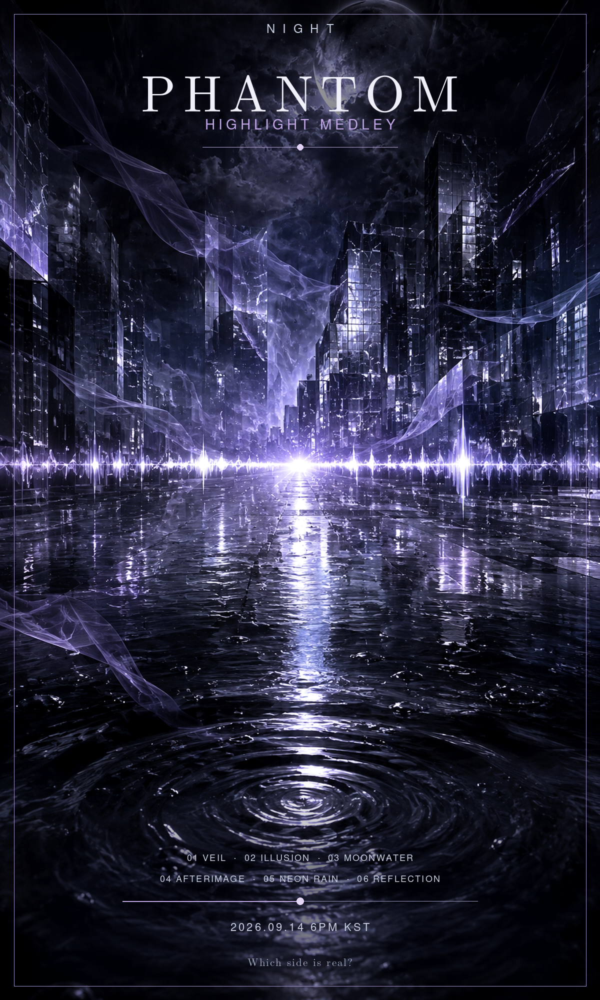
LISTEN TO HIGHLIGHT MEDLEY →COMEBACK ILLUSION LYRIC SPOILER 공개
PHANTOM의 타이틀곡 ILLUSION의 리릭 스포일러가 공개되었습니다.
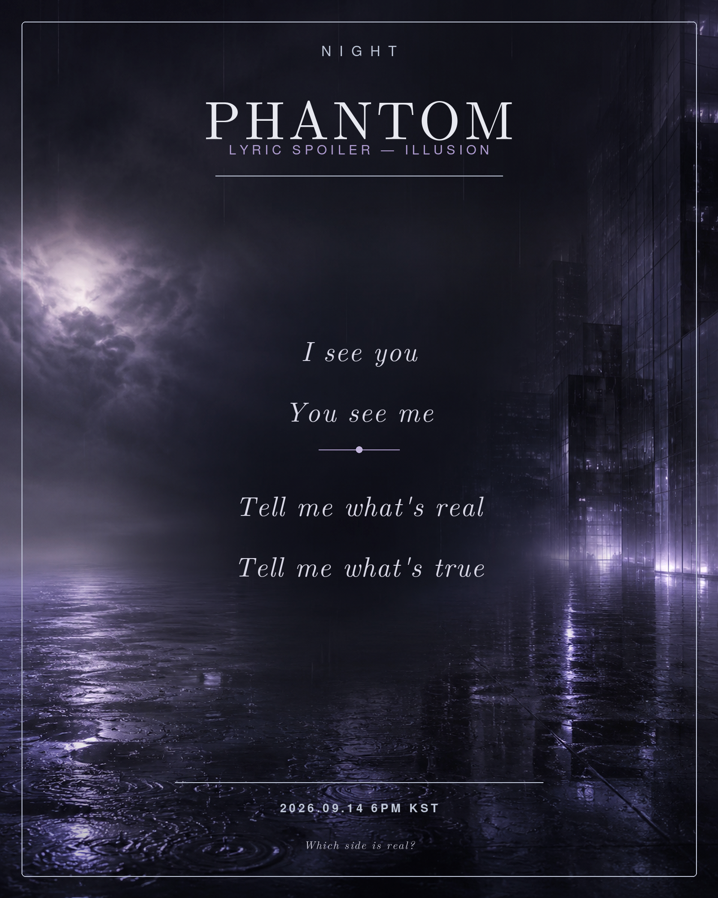
COMEBACK PHANTOM ALBUM PACKAGE PREVIEW 공개
NIGHT의 4th Mini Album PHANTOM 앨범 패키지 프리뷰가 공개되었습니다.
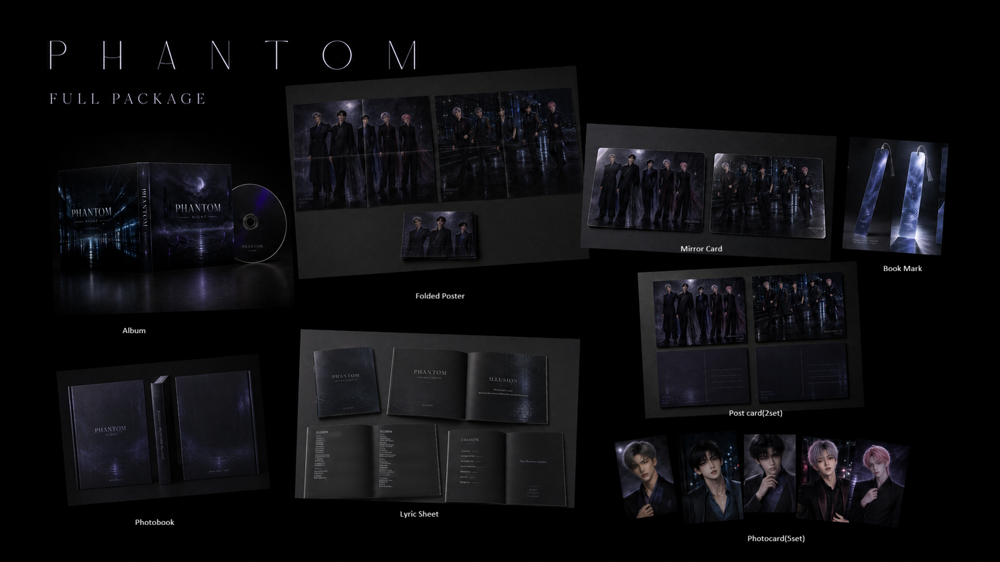
COMEBACK PHANTOM TRACK LIST 공개
VEIL, ILLUSION, MOONWATER, AFTERIMAGE, NEON RAIN, REFLECTION까지 PHANTOM의 여섯 트랙이 공개되었습니다.
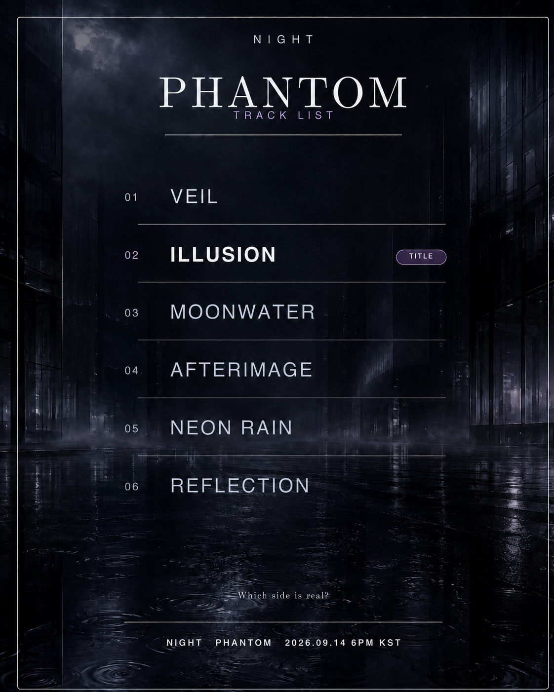
COMEBACK A × B : BETWEEN THE ILLUSION 공개
A와 B, 두 개의 시선 사이에서 PHANTOM의 경계가 더욱 흐려집니다.

COMEBACK PHANTOM MOOD TEASER 공개
NIGHT의 새 앨범 PHANTOM의 MOOD TEASER가 공개되었습니다. 달빛, 수면, 뒤집힌 도시가 교차하며 현실과 허상의 경계를 암시합니다.

COMEBACK PHANTOM COMEBACK SCHEDULER 공개
NIGHT의 새 앨범 PHANTOM 컴백 스케줄러가 공개되었습니다. 타이틀곡은 ILLUSION이며, 앨범과 뮤직비디오는 2026.09.14 18:00 KST 공개됩니다.

FANCLUB LUNA 4th Generation 멤버십 키트 공개 안내
공식 팬클럽 LUNA 4기 멤버십 키트 MOONLIT ILLUSION이 공개되었습니다.
VIEW LUNA 4TH KIT →SITE NIGHT OFFICIAL SITE ARCHIVE 업데이트 안내
DISCOGRAPHY, HISTORY, LISTEN 및 GALLERY 아카이브가 업데이트되었습니다. 데뷔 이후의 주요 앨범과 활동 기록, 역대 타이틀곡을 확인할 수 있습니다.
MAGAZINE NIGHT MAGAZINE FEATURE 발간 안내
NIGHT의 공식 잡지 화보 및 인터뷰 특집이 2026년 5월 26일 발간되었습니다. 일부 화보 이미지는 GALLERY 아카이브에서 확인할 수 있습니다.
VIEW MAGAZINE SITE →EDITORIAL NIGHT OFFICIAL PHOTO BOOK 발간 안내
NIGHT의 공식 화보가 2026년 4월 1일 발간되었습니다. 관련 이미지 일부는 GALLERY의 EDITORIAL 아카이브에서 확인할 수 있습니다.
VIEW EDITORIAL SITE →